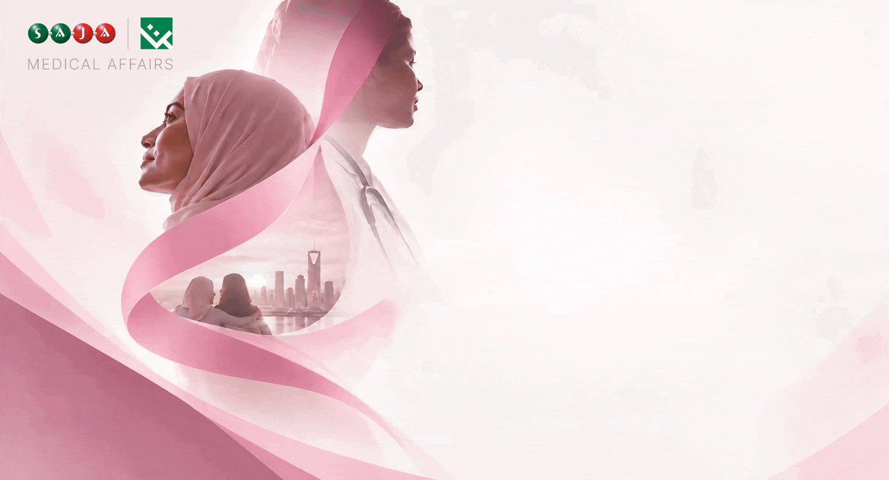

 |
| | | |
 | Dear Colleagues, |
| |  | زملاءنا الأعزاء، |
|
Over the past few days, we have learned about breast cancer, recognized the importance of early detection, understood more of the patient journey, and considered the power of listening and support. | | خلال الأيام الماضية، تعرّفنا أكثر على سرطان الثدي، وانتبهنا إلى أهمية الاكتشاف المبكر، وفهمنا جوانب أوسع من رحلة المريضة، وتحدثنا عن قيمة الاستماع والدعم. |
Now it is time to turn awareness into action. | | والآن حان الوقت لتحويل الوعي إلى خطوة عملية. |
Choose one: become familiar with the signs and symptoms; discuss the right screening approach for your age and risk with a healthcare professional; share information from trusted medical sources; or reach out to someone affected by cancer and offer your support. | | اختر خطوة واحدة اليوم: تعرّف على علامات وأعراض سرطان الثدي، أو ناقش مع مختص صحي خطة الفحص الأنسب لعمرك وعوامل الخطورة لديك، أو شارك معلومات من مصادر طبية موثوقة، أو تواصل مع شخص تأثر بالسرطان وقدّم له دعمك. |
Awareness is valuable. Awareness followed by action is more powerful. | | الوعي مهم، لكن الوعي الذي يتحول إلى فعل أكثر تأثيرًا. |
 | KNOW. DETECT. UNDERSTAND. LISTEN. ACT. |
| | | لنعرف. لنكتشف مبكرًا. لنفهم. لنستمع. لنبادر. |
|
| |
| | Consider screening ناقش الفحص |
| | Share trusted information شارك معلومات موثوقة |
|  | Offer support قدّم الدعم |
|
|
| |
|
 |  | References | المراجع | 1. | World Health Organization. Breast cancer. | | 2. | World Health Organization. Global Breast Cancer Initiative. | | 3. | Saudi Ministry of Health. Breast Cancer — Health Awareness. |
|  | This campaign provides general health-awareness information and does not replace individual medical consultation, diagnosis or treatment. توفر هذه الحملة معلومات توعوية صحية عامة ولا تُغني عن الاستشارة الطبية أو التشخيص أو العلاج الفردي. |
| | |
|